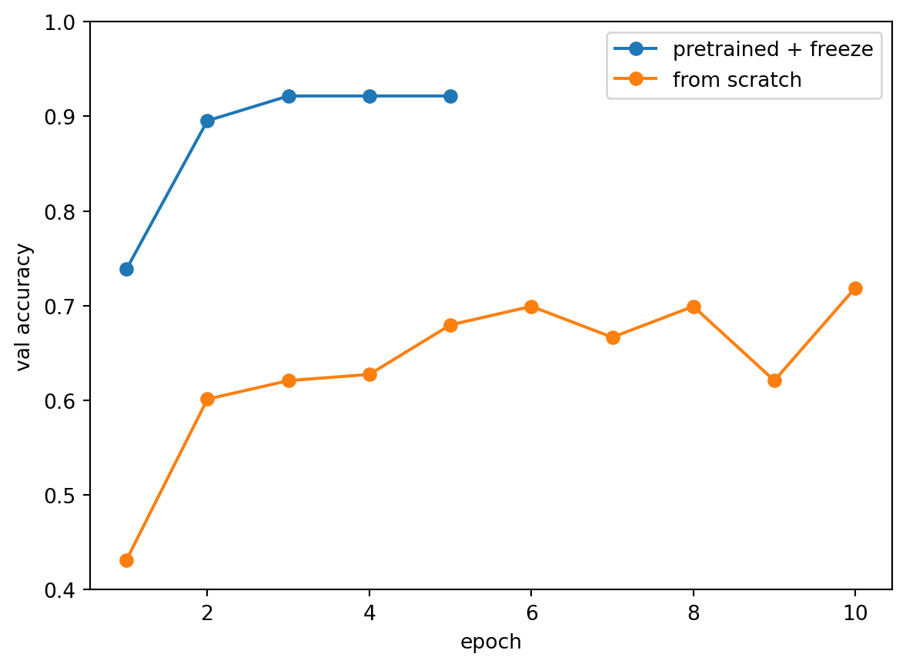
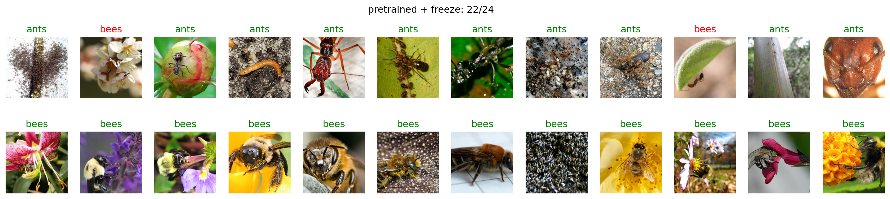
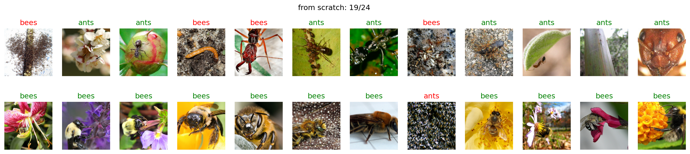

사전학습 모델에는 학습할 때와 같은 형태의 입력을 넣습니다. 이 모델은 224×224 사진을 ImageNet 사진의 채널별 평균과 표준편차로 표준화해 학습했습니다. Resize(256)으로 짧은 변을 256으로 줄이고 CenterCrop(224)로 가운데를 잘라 냅니다.
훈련 사진에 쓸 변환에 이론 8장의 증강을 넣습니다. RandomHorizontalFlip()은 절반의 확률로 좌우를 뒤집고, RandomRotation(15)는 −15°에서 15° 사이로 돌리고, ColorJitter는 밝기·대비·채도를 30% 안에서 바꿉니다. 회전을 CenterCrop 앞에 두어 회전으로 생긴 모서리가 잘려 나가게 합니다.
💬 결과 해설 — 특성 학습부가 사진 한 장을 특성 512개로 바꾸고, 분류부가 그 512개로 1,000개 클래스의 점수를 냅니다. 개미와 벌을 가르려면 분류부를 출력 2개짜리로 바꿔야 합니다.
5-2. 특성 학습부 동결
실습 3에서 requires_grad가 True인 텐서만 backward() 때 기울기가 계산된다고 했습니다. 기울기가 없으면 옵티마이저도 값을 바꾸지 못합니다. 그래서 파라미터의 requires_grad를 False로 바꾸면 그 파라미터는 학습 중에도 그대로 고정됩니다. 이것이 동결입니다. 먼저 모델의 모든 파라미터를 동결합니다.
# ✍️ 직접 입력for p in model.parameters(): p.requires_grad =Falsen_train =sum(p.numel() for p in model.parameters() if p.requires_grad)print(n_train)
0
✅ 체크포인트 — 0이면 맞습니다.
💬 결과 해설 — 지금은 분류부까지 모두 동결되어 학습할 파라미터가 하나도 없습니다.
5-3. 분류부 갈아 끼우기
model.fc에 새 층을 넣으면 분류부가 바뀝니다. 입력은 특성 512개 그대로이고, 출력은 개미와 벌 2개입니다. 새로 만든 층은 CPU에 있으므로 모델을 다시 device로 옮깁니다. 바꾼 뒤 고양이 사진을 넣어 출력 모양을 봅니다.
# ✍️ 직접 입력model.fc = nn.Linear(512, 2)model = model.to(device)print(model.fc)model.eval()with torch.no_grad():print(model(tf(photo).unsqueeze(0).to(device)).shape)
💬 결과 해설 — 2절에서는 같은 사진에 점수가 1,000개 나왔는데, 이제는 2개만 나옵니다. 분류부만 바뀌었고 특성 학습부는 그대로입니다.
학습할 파라미터를 다시 셉니다.
# ✍️ 직접 입력n_train =sum(p.numel() for p in model.parameters() if p.requires_grad)n_all =sum(p.numel() for p in model.parameters())print(n_train, n_all)
1026 11177538
✅ 체크포인트 — 1026 11177538이면 맞습니다.
💬 결과 해설 — 새로 만든 층은 requires_grad가 기본값 True라서 분류부의 1,026개만 학습 대상이 됩니다. 이론 8장의 계산 512 × 2 + 2 = 1,026과 같습니다. 순서가 중요합니다. 분류부를 먼저 바꾸고 나서 동결 반복문을 돌리면 새 분류부까지 동결되어 학습할 파라미터가 0이 됩니다.
6. 학습시켜 비교한다
학습 함수와 평가 함수는 실습 6과 같습니다.
# ▶ 그대로 실행하세요 — 실습 6과 같은 학습·평가 함수def train_one_epoch(model, loader, criterion, optimizer): model.train() total =0.0 n =0for xb, yb in loader: xb, yb = xb.to(device), yb.to(device) optimizer.zero_grad() loss = criterion(model(xb), yb) loss.backward() optimizer.step() total += loss.item() *len(yb) n +=len(yb)return total / ndef evaluate(model, loader, criterion): model.eval() total =0.0 correct =0 n =0with torch.no_grad():for xb, yb in loader: xb, yb = xb.to(device), yb.to(device) out = model(xb) total += criterion(out, yb).item() *len(yb) correct += (out.argmax(1) == yb).sum().item() n +=len(yb)return total / n, correct / n
옵티마이저에는 학습할 분류부 model.fc의 파라미터만 넘깁니다. 학습 전의 검증 정확도를 먼저 봅니다.
💬 결과 해설 — 검증 정확도가 0.4에서 0.8 사이를 오르내립니다. 구조도 사진도 같고, 다른 것은 가중치의 출발점뿐입니다.
# ▶ 그대로 실행하세요 — 두 모델의 검증 정확도plt.plot(range(1, 6), hist_tl, marker='o', label='pretrained + freeze')plt.plot(range(1, 11), hist_sc, marker='o', label='from scratch')plt.xlabel('epoch')plt.ylabel('val accuracy')plt.ylim(0.4, 1.0)plt.legend()plt.show()

검증 사진 24장에 각 모델의 판별을 적습니다. 맞으면 초록, 틀리면 빨강이고, 그림 제목에 맞힌 수가 나옵니다.
# ▶ 그대로 실행하세요 — 검증 사진 24장 판별raw_val = datasets.ImageFolder(ROOT +'/val')view = transforms.Compose([transforms.Resize(256), transforms.CenterCrop(224)])idx =list(range(0, 153, 6))[:24]for m, title in [(model, 'pretrained + freeze'), (scratch, 'from scratch')]: m.eval() fig, axes = plt.subplots(2, 12, figsize=(20, 4)) hit =0for ax, i inzip(axes.flat, idx): img, label = raw_val[i]with torch.no_grad(): p = m(tf(img).unsqueeze(0).to(device)).argmax(1).item() hit +=int(p == label) ax.imshow(view(img)) ax.set_title(raw_val.classes[p], color='green'if p == label else'red') ax.axis('off') fig.suptitle(f'{title}: {hit}/24') plt.show()


💬 결과 해설 — 사전학습 모델은 24장 가운데 한두 장만 틀립니다. 처음부터 학습한 모델은 그보다 몇 배 많이 틀리고, 틀리는 장수는 학습할 때마다 달라집니다. 사진 244장은 처음부터 학습하기에는 적지만, 분류부 1,026개를 학습하기에는 충분합니다.
7. 실습 과제 (8분)
📝 과제 1 · 사진을 더 줄이면
훈련 사진을 클래스마다 20장, 모두 40장만 써서 동결 학습을 다시 합니다. 새 모델을 만들어 5절과 같이 동결하고, 10 에폭 학습한 뒤 검증 정확도를 적습니다.
# 📝#> 힌트: train_ds.targets에서 라벨이 0인 앞 20개와 1인 앞 20개의 번호를 골라 Subset(train_ds, idx)로 데이터셋을 만들고, DataLoader(batch_size=8, shuffle=True)로 감쌉니다.#> 힌트: 모델은 models.resnet18(weights=weights)로 새로 만들고, 5절의 동결·교체 코드와 6절의 학습 반복문을 그대로 씁니다.idx = [i for c in (0, 1) for i in [j for j, t inenumerate(train_ds.targets) if t == c][:20]]small_loader = DataLoader(Subset(train_ds, idx), batch_size=8, shuffle=True)m20 = models.resnet18(weights=weights)for p in m20.parameters(): p.requires_grad =Falsem20.fc = nn.Linear(512, 2)m20 = m20.to(device)opt20 = torch.optim.Adam(m20.fc.parameters(), lr=0.001)for epoch inrange(10): train_one_epoch(m20, small_loader, criterion, opt20)print(len(idx), evaluate(m20, val_loader, criterion))
40 (0.3301951972877278, 0.869281045751634)
✏️ 클래스당 20장일 때 검증 정확도:
예시 답: 웹페이지에서는 0.87이고, 학습할 때마다 0.87~0.90 사이입니다. 사진 40장으로도 244장을 다 쓴 동결 학습(약 0.93)과 크게 다르지 않고, 244장으로 처음부터 학습한 모델(0.7 안팎)보다 높습니다.
📝 과제 2 · 모든 층을 학습하면
동결하지 않고 모든 파라미터를 학습합니다. 사전학습 가중치에서 출발하므로 학습률을 0.0001로 작게 둡니다. 5 에폭 학습한 뒤 검증 정확도를 동결 학습과 비교합니다.
# 📝#> 힌트: models.resnet18(weights=weights)로 새로 만들고 fc만 nn.Linear(512, 2)로 바꿉니다. 동결 반복문은 쓰지 않습니다.#> 힌트: 옵티마이저에 모델 전체의 파라미터를 넘기고 lr=0.0001로 둡니다.full = models.resnet18(weights=weights)full.fc = nn.Linear(512, 2)full = full.to(device)opt_full = torch.optim.Adam(full.parameters(), lr=0.0001)for epoch inrange(5): train_one_epoch(full, train_loader, criterion, opt_full)print(evaluate(full, val_loader, criterion))
(0.2611956089929818, 0.9281045751633987)
✏️ 모든 층을 학습했을 때의 검증 정확도와 동결 학습과의 차이:
예시 답: 약 0.93으로 동결 학습과 비슷합니다. 학습할 파라미터는 1,026개에서 약 1,100만 개로 늘었지만, 사진이 적어 정확도는 크게 오르지 않습니다.
✅ 정리
배운 것
핵심
사전학습 모델 불러오기
models.resnet18(weights=models.ResNet18_Weights.IMAGENET1K_V1). 클래스 이름은 weights.meta['categories']